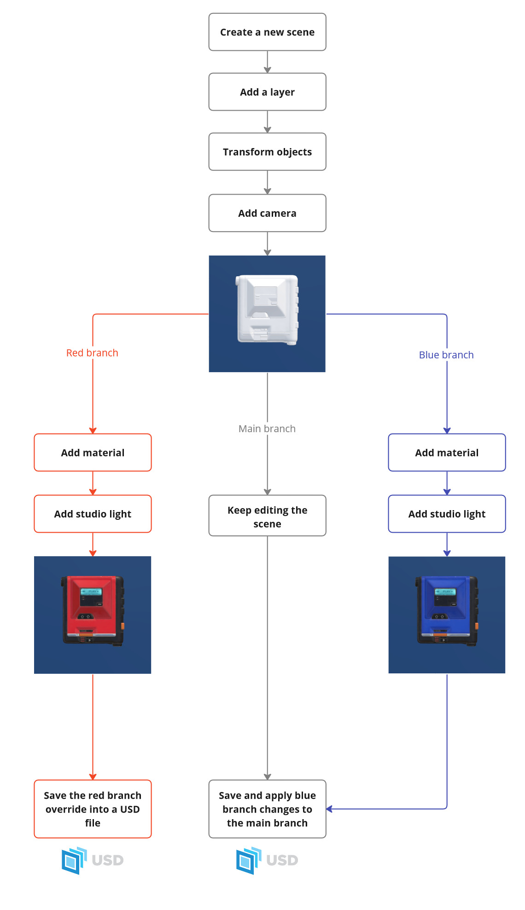

Next Steps
Basic Example: Create a contact sheet
API Modules : image, scene, material, renderer, transform, camera, light
Let’s use everything we’ve learned in Getting Started from the beginning and save the result as a contact-sheet. The next snippet shows how to render an asset with some material variation, render images and save them as contact-sheet:
from substance3d.api import image, scene, primitive, material, renderer, transform, light, camera
# create a new scene
my_scn = scene.new()
# create a xform that will reference our asset
walkman_grp = primitive.xform(my_scn, 'walkman_grp')
# reference our walkman asset on this xform
scene.add_reference(walkman_grp, './walkman.fbx')
# turn the asset of 90 degree on X axis to align it with the camera
transform.rotate(walkman_grp, (90.0, 0.0, 0.0))
# create camera and move it back
cam = camera.create(my_scn, 'camera')
transform.translate(cam, (0.0, 0.0, -50))
# add an environment light to have a studio lighting
light.dome(my_scn, 'my_dome_light', './cool_studio.hdr')
# add a sbsar material for our walkman
mat = material.create_from_sbsar(my_scn, './walkman_material_presets.sbsar', 'walkman_material')
# assign material on the walkman by using search function to select meshes
material.assign_to_objects(mat, walkman_grp.search(type='mesh'))
# get presets
mat_presets = material.get_sbsar_presets(mat)
# and now let's render an image for each material presets and store the result in a list
render_images = []
renderer.init(my_scn)
for preset in mat_presets:
material.set_sbsar_preset(mat, preset)
render_img = renderer.render(my_scn, resolution=(1024, 1024), samples=300, default_light=False, camera=cam, background_image='./grey_background.png')
render_images.append(render_img)
# gather all our images into a contact-sheet
final_img = image.create_contact_sheet(render_images, grid_size=(2, 2), width=1024, border_size=2)
# and save it !
final_img.save('./walkman_variations.png')
Scene Branch Management
What is the a scene branch? A scene branch is a way to edit your current scene in a defined context without impacting the current state of your scene. Similar to code development with git, you can create a branch to modify your scene without affecting the main branch. This branch system can be used to save several states of your scene or used as session layers
Let’s see it in actions with an example. Branch Schema
from substance3d.api import image, scene, material, renderer, transform, light, camera, primitive
# Start the scene creation
# create a new scene
my_scn = scene.new()
# create a xform that will reference our asset
walkman_grp = primitive.xform(my_scn, 'walkman_grp')
# reference our walkman asset on this xform
scene.add_reference(walkman_grp, './walkman.fbx')
# turn the asset of 90 degree on X axis to align it with the camera
transform.rotate(walkman_grp, (90.0, 0.0, 0.0))
# create camera and move it back
cam = camera.create(my_scn, 'camera')
transform.translate(cam, (0.0, 0.0, 50.0))
# At this stage, we have our untextured asset and a camera with no lighting
# Create the red branch for lighting and texturing
red_branch = scene.branch.create(my_scn, 'red_branch')
with red_branch:
# Everything here is created and modified in the red branch context
# Create a material and texture the asset
mat = material.create_from_sbsar(my_scn, './walkman_material_presets.sbsar', 'walkman_material')
red_mat = material.set_sbsar_preset(mat, 'red')
material.assign_to_objects(red_mat, walkman_grp.search(type='mesh'))
# Add lighting
light.dome(my_scn, 'red_branch_dome_light', './cool_studio_1.hdr')
# Save only the content of the branch as an override in an USD file
scene.branch.save(my_scn, 'red_branch', './red_branch.usda')
# Create a new branch from main for another lighting and texturing
blue_branch = scene.branch.create(my_scn, 'blue_branch')
with blue_branch:
# Everything here is created and modified in the blue branch context
# Create a material and texture the asset
mat = material.create_from_sbsar(my_scn, './walkman_material_presets.sbsar', 'walkman_material')
blue_mat = material.set_sbsar_preset(mat, 'blue')
material.assign_to_objects(blue_mat, walkman_grp.search(type='mesh'))
# Add lighting
light.dome(my_scn, 'red_branch_dome_light', './cool_studio_2.hdr')
# Save only the content of the branch as an override in an USD file
scene.branch.save(my_scn, 'blue_branch', './main_scene_with_blue_branch.usda', apply=True)
Eclair, USDPreviewSurface and AdobeStandardMaterial
API Modules : material
Eclair is a renderer developed by Adobe and shipped with SSCA. SSCA integrates the hydra-delegate version of Eclair to easily use and render any USD scene.
When creating a material with SSCA, an AdobeStandardMaterial shader is created that Eclair
will primarly use if available. AdobeStandardMaterial has more features and can carry more informations, notably
when using SBSAR materials and other Substance files in your workflow.
What does that mean ?
Natively, USD features a shader called USDPreviewSurface, that has several inputs values and that can be rendered with all Hydra-based renderers (more informations on Pixar’s USD Documentation).
While Eclair can also render USDPreviewSurface, it will prioritize AdobeStandardMaterial if available, meaning
users must be aware of the renderer used, the shader used, and consequently, the inputs that will be used, should they wish to manipulate them.
For example, let’s create a scene with a simple yellow color :
# Create scene
main_scene = scene.new()
# Create material
my_mat = material.create_solid_color(main_scene, "yellow", (1.0, 1.0, 0.0))
At this point, SSCA will create a material with AdobeStandardMaterial and USDPreviewSurface shaders.
my_mat.inspect() shows us the inputs available for change :
PrimHandler:
[...]
Attributes :
.inputs.baseColor
.inputs.diffuseColor
.inputs.uvrotation
.inputs.uvscale
.inputs.uvtranslation
.outputs.adobe.surface
.outputs.displacement
.outputs.surface
.outputs.volume
[...]
We can notice there’s a .baseColor input and a .diffuseColor input.
.diffuseColor is used to change the material color within an USDPreviewSurface workflow, while
.baseColor is used within an AdobeStandardMaterial workflow.
Without explaining further those workflows and shaders, what we must remind here is that there are common and specific inputs for both of them. If you work mainly with Eclair, you may want to primarily use ASM inputs, while if you use primarily PreviewSurface, you’ll want to use those inputs instead.
Below stands a list of those specificities. It also features the usages when using material.create_from_inputs()
or material.create_from_textures_dir().
SUBSTANCE_USAGE_MAPPING = {
# Common
"roughness": ("roughness",),
"metallic": ("metallic",),
"opacity": ("opacity",),
"normal": ("normal",),
# USDPreview specific
"diffuseColor": ("baseColor", "Base_Color"),
"emissiveColor": ("emissive",),
"clearcoat": ("coatWeight",),
"clearcoatRoughness": ("coatRoughness",),
"occlusion": ("occlusion", "ambientOcclusion", "MixedAO", "Mixed_AO"),
"displacement": ("displacement",),
"ior": (
"IOR",
"ior",
),
# ASM specific
"baseColor": ("baseColor", "Base_Color"),
"specularLevel": ("specularLevel",),
"specularEdgeColor": ("specularEdgeColor",),
"normalScale": ("normalScale",),
"height": ("height",),
"heightScale": ("heightScale",),
"heightLevel": ("heightLevel",),
"anisotropyLevel": ("anisotropyLevel",),
"anisotropyAngle": ("anisotropyAngle",),
"emissiveIntensity": ("emissiveIntensity",),
"emissive": ("emissive",),
"sheenOpacity": ("sheenOpacity",),
"sheenColor": ("sheenColor",),
"sheenRoughness": ("sheenRoughness",),
"translucency": ("translucency",),
"IOR": (
"IOR",
"ior",
),
"dispersion": ("dispersion",),
"absorptionColor": ("absorptionColor",),
"absorptionDistance": ("absorptionDistance",),
"scatteringColor": ("scatteringColor",),
"scatteringDistance": ("scatteringDistance",),
"scatteringDistanceScale": ("scatteringDistanceScale",),
"scatteringRedShift": ("scatteringRedShift",),
"scatteringRayleigh": ("scatteringRayleigh",),
"coatOpacity": ("coatOpacity",),
"coatColor": ("coatColor",),
"coatRoughness": ("coatRoughness",),
"coatIOR": ("coatIOR",),
"coatSpecularLevel": ("coatSpecularLevel",),
"coatNormal": ("coatNormal",),
"coatNormalScale": ("coatNormalScale",),
"ambientOcclusion": (
"ambientOcclusion",
"MixedAO",
"Mixed_AO",
),
"volumeThickness": ("volumeThickness",),
"volumeThicknessScale": ("volumeThicknessScale",),
}
Statistics Collectors
API Modules : stats
stats.collect_stats() from the stats module allows you to quickly get native statistics of any scene/object/list of objects, like the number of triangles or the bounding box size.
Example :
res = stats.collect_stats(scn)
>>> {
"Animated attributes": 0,
"Bbox info": {
"bbCenter": [
0.013824090361595154,
-0.0176331028342247,
0.038637787103652954
],
"bbMax": [
0.15761585533618927,
0.09596650302410126,
0.37433239817619324
],
"bbMin": [
-0.12996767461299896,
-0.13123270869255066,
-0.29705682396888733
],
"bbSize": [
0.28758352994918823,
0.22719921171665192,
0.6713892221450806
],
"metersPerUnit": 1.0,
"stageHasAuthoredUnits": true,
"units": "meters"
},
"Lights": 0,
"Materials": 0,
"Meshes": 38,
"Object Prims": 582,
"Points": 3889144,
"Quads": 0,
"SubMeshes": 0,
"Triangles": 7778172,
"Vertices": 3889144
}
Note
Current native collectors : Vertices, ObjectPrims, Points, ObjectMaterials, Triangles, Quads, ObjectMeshes, ObjectSubMeshes, ObjectLights, AttrAnimated, BboxInfo
Moreover, you can create your own collector by creating a class that inherits from stats.BaseCollector and passing it to stats.collect_stats().
Some methods and attributes must be implemented, as you will see in the example below.
Example : Simple collector to collect meshes smaller than one (1) unit on every dimension
class SmallMeshes(stats.BaseCollector):
name = "Small Meshes" # Displayed name of the collector.
id = "smallMeshes" # Id of the collector (use a different id for each collector).
collect_on_inherited = False # Set to True to collect stats within inherited types.
def collect_on(self) -> tuple:
# Define the object types you want to collect stats on.
# This needs to be a tuple with one or more type names.
return ("Mesh",)
def do_with_previous_result(self, previous_result, current_result):
# Define what to do with previously collected result of one entitiy and the current one, given the context.
# The returned value will be used as the next previous_result for the next collect.
# The final result is the value that will be displayed next to the collector name when printing stats.
return previous_result + current_result
def collect(self, entity):
# Collect instructions for one entity.
bbox = utility.bbox_info(entity.stage_handler, entity, use_precise_mesh_bbox=False)
if bbox["bbSize"][0] < 1 and bbox["bbSize"][1] < 1 and bbox["bbSize"][2] < 1:
return 1
return 0
Let’s look at this collector in action
from substance3d.api import scene, transform, primitive, stats, utility
# Simple scene
main_scene = scene.new()
root = primitive.xform(main_scene, "root")
# Adding two cubes
cube = primitive.cube(root)
cube_small = primitive.cube(root)
transform.scale(cube_small, (0.01,0.01,0.01))
# Getting statistics from native collectors + our custom collector
res = stats.collect_stats(main_scene, user_collectors=[SmallMeshes])
>>> {
...
"Small Meshes": 1, # <- Result of our collector
"SubMeshes": 0,
"Triangles": 0,
"Vertices": 16
}
Render Settings
RenderSettings is a prim that centralizes render parameters in your scene.
They will be used by renderer.render() and renderer.init() when corresponding arguments aren’t set.
When a parameter is set on the RenderSettings prim, it will be saved in the stage and
in the resulting USD files, making it a good way to share render informations.
renderer.get_render_settings(scene) is used to get the current render settings of the scene.
If they don’t exist yet, this function will create them. Only one RenderSettings prim can be created per scene.
When rendering, arguments given in renderer.init() and renderer.render() will take precedence
over the RenderSettings corresponding parameters, but remember that only the latter will be saved in the scene and USD files.
Render settings use example:
# Create a new scene and a camera
scn = scene.new()
primitive.cube(scn)
cam = camera.create_view(scn, 'cam', camera.Views.TOP_RIGHT)
# Assigning values to render settings parameters
rs = renderer.get_render_settings(scn) # If the RenderSettings prim didn't exist yet, it is created here
rs.adobe.convergedPixelSamples.set(200)
rs.adobe.pixelCyclingType.set('noCycling')
rs.adobe.displacementEnabled.set(False)
rs.resolution.set((128, 128))
rs.adobe.renderingTechnique.set('cpuPathTracing')
rs.adobe.envLightCameraVisibility.set(True)
rs.adobe.groundplane.enabled.set(True)
rs.adobe.compositingEnabled.set(True)
rs.adobe.backgroundColor.set((1.0, 0.0, 0.0, 1.0))
rs.camera.set([cam]) # connect camera to the RenderSettings
Tip
Use rs.inspect() to see all available parameters in render settings.
display_values=True argument will show the current values,
while display_more=True argument will show additional informations about
each parameter.
To filter the parameters, you can also use the filter argument.
For example, to only show groundplane related parameters, you can use filter=*groundplane* .
Missing parameters in RenderSettings
Some render arguments aren’t available in RenderSettings and still must be passed in renderer.render().
You will find them below :
default_light: bool | None = True,
background_image: str | image.Image | Path | None = None,
background_resize: bool = True,
time_limit: float = 0.0,
passes: list[Pass] | None = None,
Render settings override
While RenderSettings is convenient to set render parameters, they don’t have the highest priority, and there are several cases where some parameters will be overridden.
Arguments passed in
renderer.init()andrenderer.render()
As explained in the beginning of this section, values directly passed as arguments in those two methods take precedence over anything else in the scene, but they won’t be saved in RenderSettings prim or in USD files.
rs = renderer.get_render_settings(scn)
rs.adobe.renderingTechnique.set('cpuPathTracing')
rs.resolution.set((128, 128))
# will take precedence over renderingTechnique set in render settings
renderer.init(scn, device=renderer.RenderingTechnique.GPURasterization)
# will take precedence over resolution set in render settings
renderer.render(scn, resolution=(1024, 1024))
Values set by default by SSCA
Below render settings are set by SSCA by default and can’t be changed.
pixelCyclingType
diagnosticMode
Resolution and camera set in Render Product
RenderProduct is a prim containing rendering informations that you may find in USD files created by other applications.
If this prim exists in the scene, its resolution and camera values will be used over RenderSettings ones.
Activate Displacement
Displacement is deactivated by default in SSCA. To activate it, you must get
render settings and set .adobe.displacementEnabled.set parameter to True.
This will allow displacement for the whole scene. You can control the intensity of
displacement for each of your materials with their heightScale input.
from substance3d.api import scene, renderer
main_scene = scene.new()
# ...
rs = renderer.get_render_settings(main_scene)
rs.adobe.displacementEnabled.set(True)
File import parameters
scene.load(), scene.add_reference() and scene.add_layer() all possess a **kwargs argument.
These additional keys let you add import parameters when importing a file in your scene.
# Example - Choosing the tesseleation level of an imported CAD file
from substance3d.api import scene
main_scene = scene.new()
scene.add_layer(main_scene, "my_file.x_t", prcTessLevel="high")
You will find below the supported parameters for the following extensions :
Extensions |
Available import parameters |
|---|---|
|
axfAssetsPath [string] : Path from where the image assets should be resolved. By default, when the usd file is exported from SSCA, it will resolve the image assets from their current location in the file system.
If a path is set in this parameter, the image assets will be copied to this new location and resolved from there instead.
“Image assets” refer to texture maps used by materials of the source file.
|
|
fbxAssetsPath [string] : Path from where the image assets should be resolved. By default, when the usd file is exported from SSCA, it will resolve the image assets from their current location in the file system.
If a path is set in this parameter, the image assets will be copied to this new location and resolved from there instead.
“Image assets” refer to texture maps used by materials of the source file.
fbxPhong [bool] : Forces phong to PBR material conversion. By default, the plugin imports the diffuse component only, without specularities. If this parameter is set to
True, it will convert PBR to phong.The phong to PBR conversion follows https://docs.microsoft.com/en-us/azure/remote-rendering/reference/material-mapping.
Keep in mind this is a lossy conversion.
fbxAnimationStacks [bool] : Allow import of multiple animation stacks. By default, only the first animation stack is imported. When set to
True, this will import all animation stacks.This parameter should be used only to convert a FBX file to another format, such as GLTF.
Furthermore, it is advised not to use this parameter if an .usd is exported after importing this FBX file.
fbxOriginalColorSpace [string] : Indicates the colorspace of the imported FBX (sRGB or linear).While in USD, FBX with indicated sRGB color space will be converted to linear RGB to match USD color space.
Setting this param also makes USD environment remember the original color space of the file for future exports of the scene to FBX.
|
|
gltfAssetsPath [string] : Path from where the image assets should be resolved. By default, when the usd file is exported from SSCA, it will resolve the image assets from their current location in the file system.
If a path is set in this parameter, the image assets will be copied to this new location and resolved from there instead.
“Image assets” refer to texture maps used by materials of the source file.
gltfAnimationTracks [bool] : Allow import of multiple animation tracks. By default, only the first animation track is imported. When set to
True, this will import all animation tracks.This parameter should be used only to convert a GLB/GLTF file to another format, such as FBX.
Furthermore, it is advised not to use this parameter if an .usd is exported after importing this file.
|
|
objAssetsPath [string] : Path from where the image assets should be resolved. By default, when the usd file is exported from SSCA, it will resolve the image assets from their current location in the file system.
If a path is set in this parameter, the image assets will be copied to this new location and resolved from there instead.
“Image assets” refer to texture maps used by materials of the source file.
objPhong [bool] : Forces phong to PBR material conversion. By default, the plugin imports the diffuse component only, without specularities. If this parameter is set to
True, it will convert PBR to phong.The phong to PBR conversion follows https://docs.microsoft.com/en-us/azure/remote-rendering/reference/material-mapping.
Keep in mind this is a lossy conversion.
objOriginalColorSpace [string] : Indicates the colorspace of the imported OBJ (sRGB or linear).While in USD, OBJ with indicated sRGB color space will be converted to linear RGB to match USD color space.
Setting this param also makes USD environment remember the original color space of the file for future exports of the scene to OBJ.
|
|
plyPoints [bool] : Forces importing UsdGeomMesh instances as points if true.plyPointWidth [float] : If the instance is treated as a point cloud, defines the default point size.plyGsplatsWithZup [bool] : Whether the imported Gaussian splat is treated as a Z-up object (True by default). If
True, an Y-up rotation is applied during import. |
.3dm, .3ds, .3dxml, .3mf, .arc, .asm, .catdrawing, .catpart, .catproduct, .catshape, .cgr, .dae, .dlv, .dwf, .dwfx, .dxf, .exp, .iam, .ifc, .ifczip, .iges,.igs, .ipt, .jt, .mf1, .model, .neu, .par, .pdf,.pkg, .prc, .prt, .psm, .pwd, .rfa, .sab, .sat, .session, .sldasm, .sldprt, .step, .stp, .stpx, .stpxz, .stpz, .u3d, .unv, .vda, .vrml, .wrl, .x_b, .x_t,.xas, .xmt, .xmt_txt, .xpr |
prcAssetsPath [string] : Path from where the image assets should be resolved. By default, when the usd file is exported from SSCA, it will resolve the image assets from their current location in the file system.
If a path is set in this parameter, the image assets will be copied to this new location and resolved from there instead.
“Image assets” refer to texture maps used by materials of the source file.
prcTessLevel [string] : Specifies the level of tessellation for the imported mesh. Allowed values: “extraLow”, “low”, “medium”, “high”, “extraHigh”.
|
asd, usd, usda, usdc, usdz, sbsar, sdf, abc, stl, mtlx |
None |
Reference flattening
Global references flattening
In order to export your USD to another software, you may want to remove models and material reference links to include them directly in the main file instead.
This can be done automatically with export.archive(flat=True) or with any export available
in the export module (i.e : glb, fbx).
Models and USDs will be integrated directly in the file while SBSARs will be converted into a set of bitmaps. Bitmaps dependencies will be copied into a “dependencies” folder next to the exported USD file. If the exported file is an archive, bitmaps will be packed along the file.
Flattening references this way will keep currently selected variants and branches but discard every other variants and branches.
A local approach for flattening references exists with the scene.flatten_references() function.
Local reference flattening
If you need to flatten references while preserving features of your USD files (like variants), you can use scene.flatten_references().
This will flatten and transfer all external references for the given prim into the current scene.
NOTE : This requires to set a filepath when you create a scene with scene.new().
The code snippet below illustrates the use of scene.flatten_references to
make an USDZ Potion asset with variants that can be imported in Game Engines and other DCCs.
# ...
with variant.create(root, "vial_potA1", "vial"):
my_import_prim = primitive.xform(root)
scene.add_reference(my_import_prim, "vial_potionA1.fbx")
scene.flatten_references(my_import_prim)
# ...
Example of the final asset imported in Unreal Engine :

Managing metadatas
SSCA includes a methods to get, modify and add metadata.
You can read the metadata of an image with image.metadata() and add or modify metadata with image.add_metadata().
Important
Depending of the keywords names and the save format, changes can occur.
For example, saving a Description or Author key as metadata will translate into the file as ImageDescription and Artist.
We recommend to always test and verify keywords beforehand, with a function like this one:
import os
from substance3d.api import image
def validate_png_metadata(img:image.Image):
test_file = "test.png"
my_metadata = image.metadata(img)
img.save(test_file)
file_metadata = image.metadata(image.Image.from_filepath(test_file))
os.unlink(test_file)
if my_metadata != file_metadata:
difference = set(my_metadata).difference(file_metadata)
raise KeyError(f"Error : Non-corroborating Keywords! : {difference}")
return my_metadata